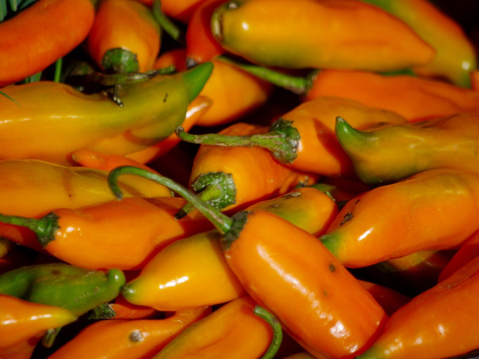
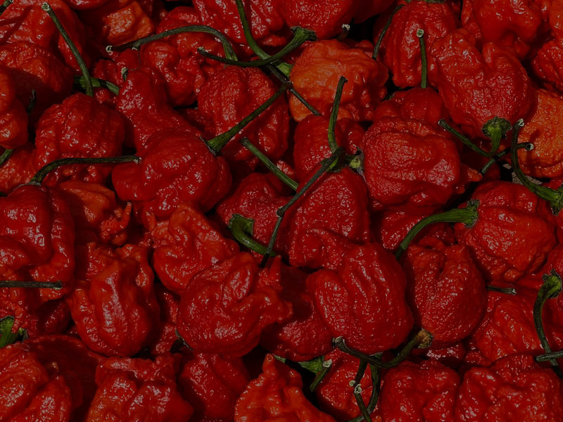
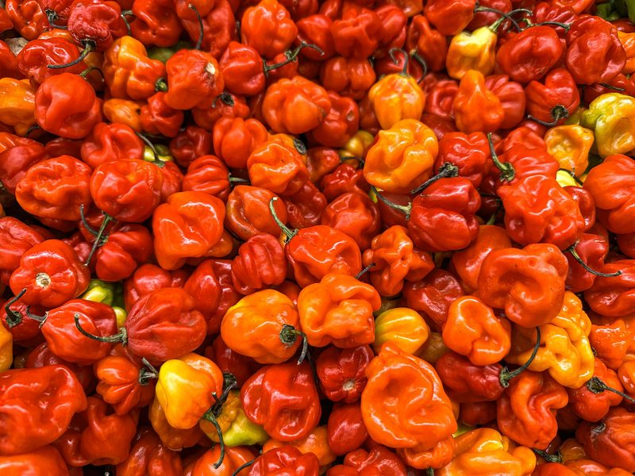
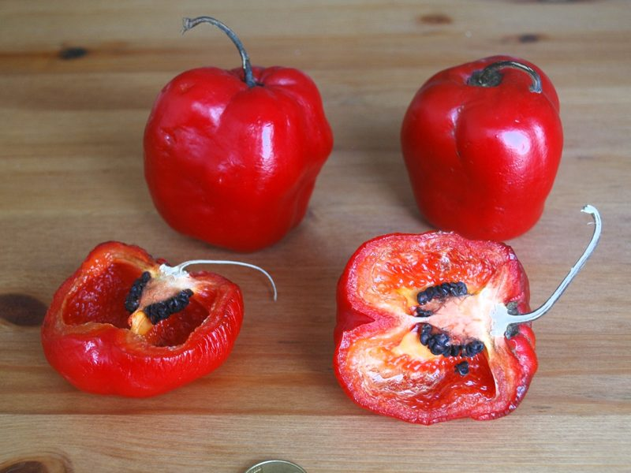
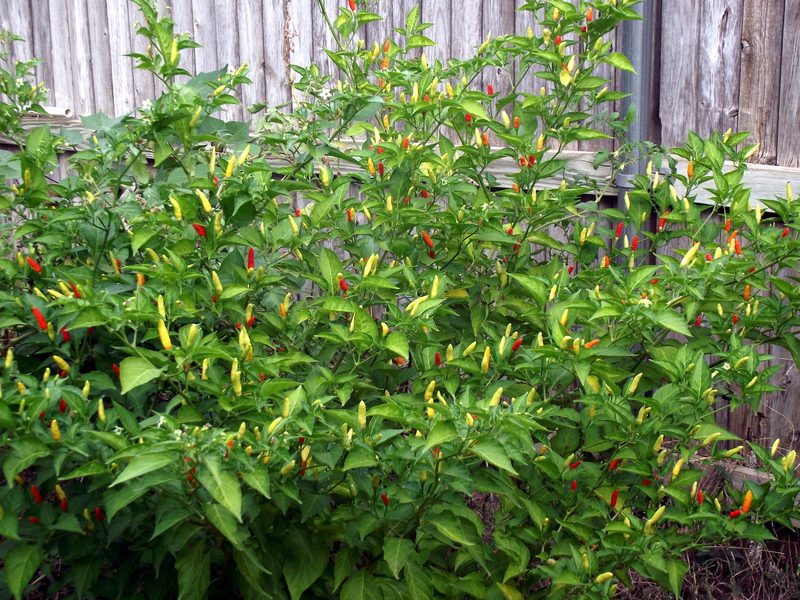
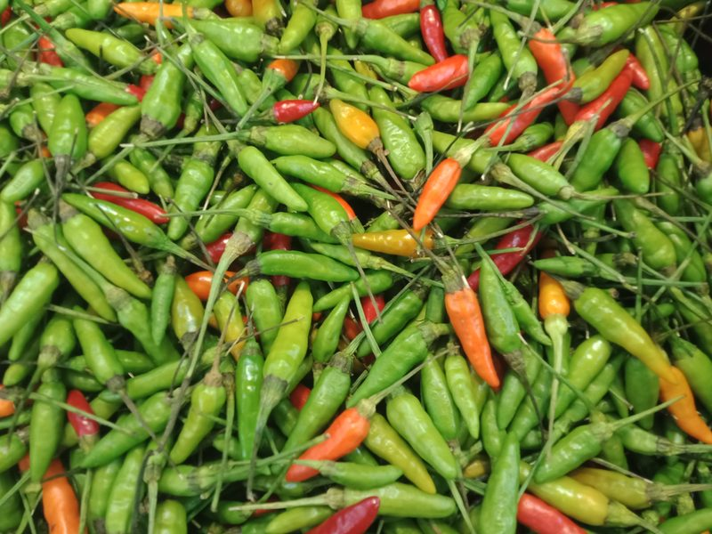

Aji Amarillo
Capsicum baccatum
Fruchtig mit leichter Zitrusnote und mittlerer Schärfe. Die wichtigste Chili der peruanischen Küche, etwa für Ají-Sauce und Ceviche.
Peru
Chilis gehören zur Gattung Capsicum aus der Familie der Nachtschattengewächse, sind also nah mit Tomaten und Kartoffeln verwandt. Weltweit gibt es mehrere Tausend Sorten, die sich in Form, Farbe, Aroma und Schärfe stark unterscheiden: von der milden, dickfleischigen Schote bis zur kleinen Frucht, bei der schon ein Hauch genügt.
Für die Schärfe ist der Stoff Capsaicin verantwortlich. Gemessen wird sie in Scoville-Einheiten (SHU). Gemüsepaprika liegt bei null, eine Jalapeño bei einigen Tausend und die schärfsten Züchtungen erreichen weit über eine Million. Wie scharf eine Schote am Ende wird, hängt neben der Sorte auch von Sonne, Wassergaben und Reifegrad ab.
Botanisch teilt man die kultivierten Chilis in fünf Arten ein. Wer die Art kennt, kann Wuchs, Aroma und Ansprüche einer Sorte schon grob einschätzen. Unten findest du zuerst einen Überblick über die fünf Arten, danach stelle ich dir einige bekannte Sorten im Porträt vor.
Die Allrounderin: von Paprika bis Cayenne
Das Aroma-Kraftpaket mit viel Schärfe
Fruchtig-zitronig, der Geschmack Perus
Klein, aufrecht und mit ordentlich Biss
Die Bergchili aus den Anden
Steckbriefe ausgewählter Sorten. Die Schärfe wird auf einer Skala von 1 bis 5 angegeben.

Capsicum baccatum
Fruchtig mit leichter Zitrusnote und mittlerer Schärfe. Die wichtigste Chili der peruanischen Küche, etwa für Ají-Sauce und Ceviche.
Peru

Capsicum chinense
Extrem scharf mit fruchtiger Süße am Anfang. Nur für Geübte und stets in winzigen Mengen.
USA

Capsicum annuum
Scharf mit klarer, neutraler Schärfe. Ideal getrocknet als Pulver oder für Saucen und Eintöpfe.
Südamerika

Capsicum chinense
Sehr scharf mit fruchtigem Aroma. Ideal für Hot Sauce, Salsa und Marinaden.
Mittel- und Südamerika

Capsicum annuum
Grün geerntet knackig-frisch, reif rot und leicht süßlich. Passt zu Nachos, Salsa und gefüllt in den Ofen.
Mexiko

Capsicum pubescens
Saftig und dickfleischig, fast wie ein kleiner Paprika, aber deutlich schärfer. Typisch sind die schwarzen Samen.
Anden

Capsicum frutescens
Scharf mit rauchig-herber Note. Die kleinen Schoten stehen aufrecht und sind die Grundlage der berühmten Tabasco-Sauce.
Mexiko

Capsicum annuum
Klein, aber sehr scharf mit klarer, frischer Schärfe. Unverzichtbar in Currys, Salaten und Sambal.
Südostasien
„Amarillo“ heißt auf Spanisch „gelb“, obwohl die Schoten reif eher orange leuchten. Die Aji Amarillo ist die wichtigste Chili der peruanischen Küche. Sie schmeckt fruchtig mit leichter Zitrusnote und hat eine angenehm mittlere Schärfe.
Die Pflanze wird groß und braucht einen geräumigen Topf sowie eine Stütze. Sie trägt ihre Früchte erst spät im Jahr, ein sonniger und warmer Platz lohnt sich daher besonders.
Die Carolina Reaper wurde in den USA gezüchtet und war lange die schärfste Chili der Welt. Ihre knubbeligen roten Schoten mit spitzem Schwanz schmecken zuerst fruchtig-süß, dann folgt eine extreme, lang anhaltende Schärfe.
Beim Verarbeiten immer Handschuhe tragen, nicht ins Gesicht fassen und die Schoten außer Reichweite von Kindern aufbewahren. Die Reaper ist nichts für Einsteiger.
Die Cayenne bildet lange, schlanke und oft leicht gebogene Schoten. Ihre Schärfe ist klar und geradlinig, ohne viel Eigenaroma. Deshalb eignet sie sich besonders gut zum Trocknen und Mahlen.
Eine Pflanze liefert viele Schoten, die sich gut an der Luft trocknen lassen. Mehr dazu findest du unter Ernte & Verarbeitung.
Die Habanero ist ein Klassiker unter den scharfen Chilis. Ihre kleinen, laternenförmigen Schoten duften fruchtig und erinnern an Aprikose und Zitrus. Die Schärfe baut sich langsam auf und hält lange an.
Habaneros brauchen Wärme und Geduld. Sie keimen langsam und sollten deshalb schon im Januar oder Februar ausgesät werden.
Die Jalapeño ist die bekannteste mexikanische Chili und ein guter Einstieg: kräftiges Aroma, aber nur moderate Schärfe. Meist wird sie grün geerntet, dann schmeckt sie knackig und frisch. Voll ausgereift färbt sie sich rot und wird süßlicher.
Jalapeños sind robust und tragen früh und reichlich. Sie kommen auch mit Balkon und größeren Kübeln gut zurecht und verzeihen kleine Pflegefehler.
Die Rocoto stammt aus den Anden und gehört zu den wenigen Chilis, die Kühle gut vertragen. Ihre apfelförmigen Früchte haben dickes, saftiges Fruchtfleisch und auffällig schwarze Samen. Die Schärfe schwankt von Frucht zu Frucht stark.
Die Rocoto braucht eine lange Vegetationszeit und verträgt keinen Frost. Säe sie früh aus und überwintere sie hell und kühl, so trägt sie auch im nächsten Jahr. Mehr dazu findest du unter Anbau.
Die Tabasco ist nach dem mexikanischen Bundesstaat benannt und vor allem durch die gleichnamige Sauce bekannt. Die kleinen Schoten stehen aufrecht am Strauch und reifen von blassgrün über gelb und orange zu leuchtend rot.
Eine Pflanze trägt sehr viele Schoten gleichzeitig. Die bunte Reife macht sie auch im Kübel zu einem schönen Anblick. Für die Sauce solltest du die Schoten voll ausgereift ernten.
Die Thai-Chili, auch Bird's Eye genannt, ist klein und schlank, hat aber ordentlich Feuer. Sie wird in ganz Südostasien angebaut und gehört in viele Currys, Suppen und Salate. Ihre Schärfe setzt schnell ein und klingt auch rasch wieder ab.
Die Pflanze mag es warm und sonnig und trägt viele kleine Schoten. Frisch halten sie sich nur kurz, getrocknet dagegen lange. Wie das geht, steht unter Ernte und Verarbeitung.